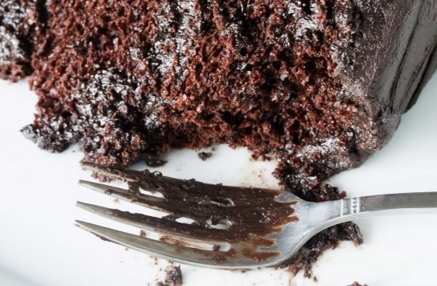
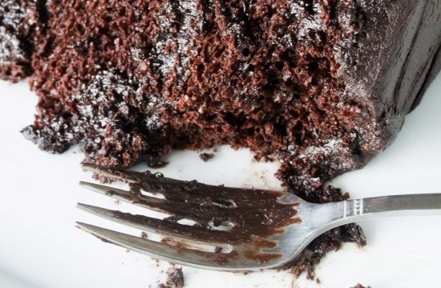
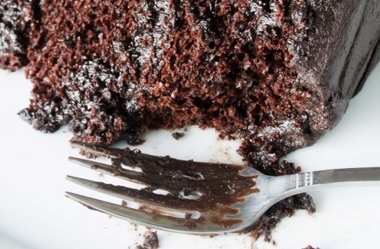

The Most Amazing Chocolate Cake is here. Moist, chocolaty perfection. This is the chocolate cake you've been dreaming of!
This cake is moist and has the perfect crumb. I cannot imagine making a chocolate cake using any other recipe.
